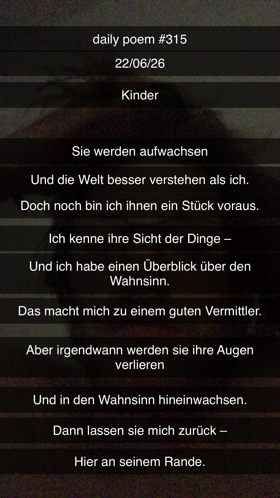

Kinder
[315]Sie werden aufwachsen –
Und die Welt besser verstehen als ich.
Doch noch bin ich ihnen ein Stück voraus.
Ich kenne ihre Sicht der Dinge –
Und ich habe einen Überblick über den Wahnsinn.
Das macht mich zu einem guten Vermittler.
Aber irgendwann werden sie ihre Augen verlieren
Und in den Wahnsinn hineinwachsen.
Dann lassen sie mich zurück –
Hier an seinem Rande.
